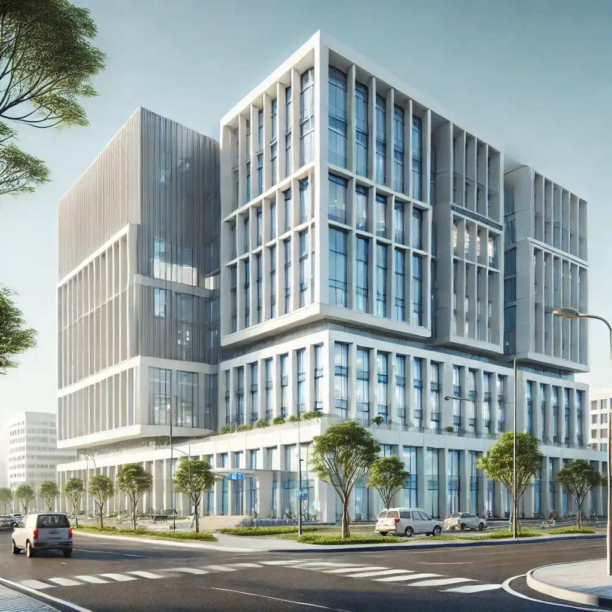
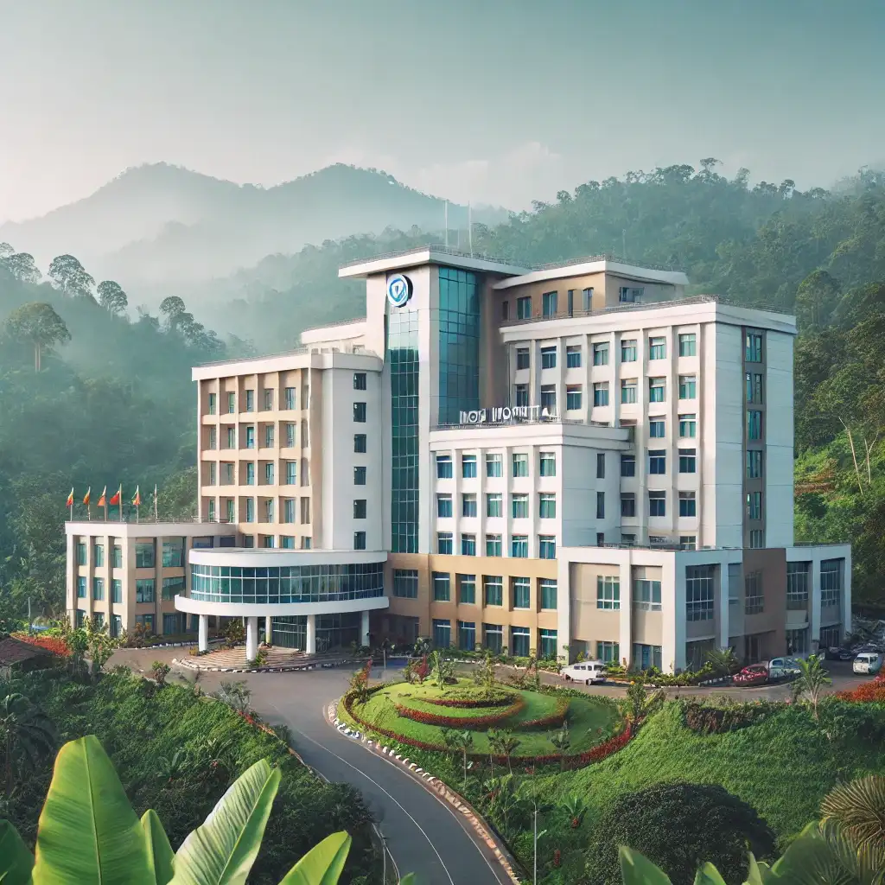
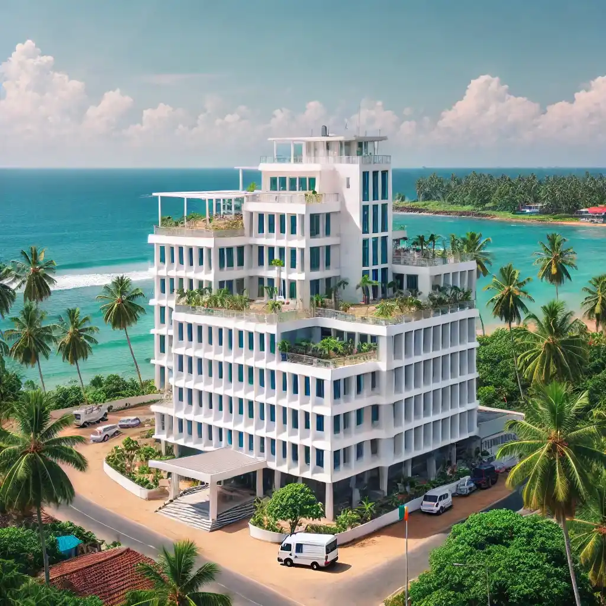
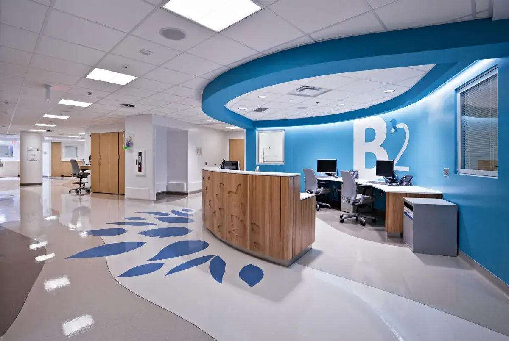

Our Journey of Care and Excellence
Welcome to LifeCare Medical Hospital, your trusted partner in health and wellness. Established with a commitment to providing exceptional healthcare services, our hospital has grown to include four state-of-the-art branches across the Sri Lanka. Each of our branches is equipped with modern medical technology and staffed by highly skilled professionals dedicated to delivering personalized care.
At LifeCare Medical Hospital, we believe in a holistic approach to healthcare, where patient well-being is at the core of everything we do. Our wide range of services includes emergency care, specialized consultations, advanced surgical procedures, and comprehensive outpatient care, ensuring that we meet the diverse needs of our patients. We are committed to advancing medical knowledge and practices, fostering innovation in healthcare, and continuously improving the quality of our services to enhance patient outcomes.
LifeCare Medical Hospital Branches
LifeCare Medical Hospital – Colombo Branch
The Colombo branch of LifeCare Medical Hospital is the flagship facility of our healthcare network, situated in the heart of Sri Lanka’s bustling capital. It serves as a premier healthcare destination, offering state-of-the-art medical technology and highly skilled professionals across a variety of specialties. With over 200 beds, advanced diagnostic centers, and specialized surgical units, the hospital is designed to provide comprehensive care under one roof.
In addition to emergency care and outpatient services, the Colombo branch features dedicated departments for cardiology, oncology, neurology, and pediatrics. Its convenient location near major transport hubs and urban infrastructure ensures easy access for patients across the Western Province. The hospital is committed to delivering personalized healthcare, with a focus on patient safety and comfort.
Contact
+94 77788 8253
colombo@lifecaremedical.com
Address
1163 Kotte Road, Colombo
LifeCare Medical Hospital – Kandy Branch
Nestled amidst the scenic hills of Sri Lanka’s cultural capital, the Kandy branch of LifeCare Medical Hospital blends modern healthcare with a tranquil environment. The facility caters to both local residents and visitors from nearby regions, offering a wide range of services, including general medicine, orthopedics, and gynecology. Its serene surroundings provide a healing atmosphere that complements the hospital’s high-quality medical care.
This branch also specializes in rehabilitation and physiotherapy services, making it a preferred choice for patients recovering from surgeries or injuries. Equipped with modern technology and a compassionate team of healthcare professionals, the Kandy branch ensures that patients receive the best possible care while enjoying the beauty of the surrounding hills.
Contact
+94 77888 9253
kandy@lifecaremedical.com
Address
45 Peradeniya Road, Kandy
LifeCare Medical Hospital – Galle Branch
Located near the picturesque southern coastline, the Galle branch of LifeCare Medical Hospital is a beacon of healthcare excellence for the Southern Province. The hospital offers a full spectrum of medical services, from general check-ups to specialized treatments in cardiology, dermatology, and internal medicine. Its proximity to the coast makes it a vital healthcare provider for both residents and tourists.
In addition to its medical services, the Galle branch emphasizes community outreach, hosting regular health camps and awareness programs. With a team of dedicated healthcare professionals and a patient-centric approach, the hospital aims to enhance the well-being of the community while maintaining international standards of care.
Contact
+94 77988 6353
galle@lifecaremedical.com
Address
22 Matara Road, Galle
LifeCare Medical Hospital – Wattala Branch
Situated in the rapidly developing suburb of Wattala, the LifeCare Medical Hospital branch serves as a key healthcare provider for the Gampaha District. The facility boasts modern amenities, including well-equipped operating theatres, diagnostic labs, and maternity wards. With over 100 beds, it offers inpatient and outpatient services tailored to meet the diverse needs of the community.
The Wattala branch is particularly known for its family medicine and pediatric care units, providing comprehensive care for patients of all ages. Its strategic location near residential areas and industrial zones makes it easily accessible, while its commitment to affordability and quality ensures that every patient receives the best possible care.
Contact
+94 77688 1234
wattala@lifecaremedical.com
Address
10 Negombo Road, Wattala
Hospital Statistics & Achievements
| Facility | Statistic | Achievement | Specialties | Accreditation |
|---|---|---|---|---|
| Total Number of Beds | 600+ | Comprehensive patient care with dedicated facilities for various needs | General Medicine, Cardiology, Pulmonology | ISO 9001 Certified |
| Staff Count | 500+ | Highly skilled medical and support staff ensuring world-class care | Emergency Care, Surgery, Pediatric Care | Joint Commission International (JCI) Accreditation |
| ICU Units | 50+ | Advanced critical care units providing 24/7 monitoring and life-saving interventions | Intensive Care, Neurosurgery, Cardiac Care | National Health Accreditation |
| Specialized Departments | 12 | Leading medical specialties and expert care in a wide variety of fields | Orthopedics, Neurology, Dermatology, Urology, Gastroenterology | Accredited by Global Health Organization |
| Ambulance Fleet | 15+ | 24/7 emergency response with well-equipped ambulances for critical care transport | Trauma Care, Cardiac Emergencies, Accident Response | ISO 14001 Certified (Environmental Management) |
| Operating Theaters | 10+ | State-of-the-art operating theaters equipped with the latest medical technology | General Surgery, Orthopedic Surgery, Cardiac Surgery | Accredited for Surgical Excellence |
| Emergency Room | 24/7 | Fully equipped emergency room with rapid response teams | Trauma Care, Cardiac Emergencies, Stroke Treatment | Certified as a Level 1 Trauma Center |
| Hospital Inpatient/Outpatient Ratio | 70% inpatient, 30% outpatient | Balanced approach to inpatient and outpatient services for comprehensive care | Outpatient Care, Inpatient Rehabilitation, Diagnostics | Recognized for High-Quality Outpatient Services |
| Dedicated to Providing World-Class Healthcare and Patient Safety | ||||